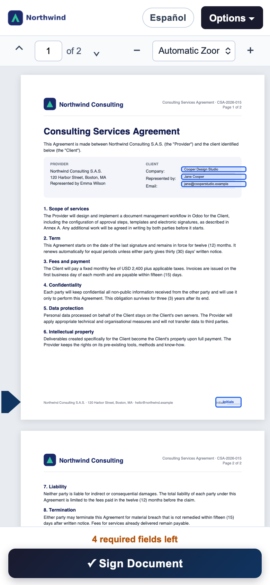
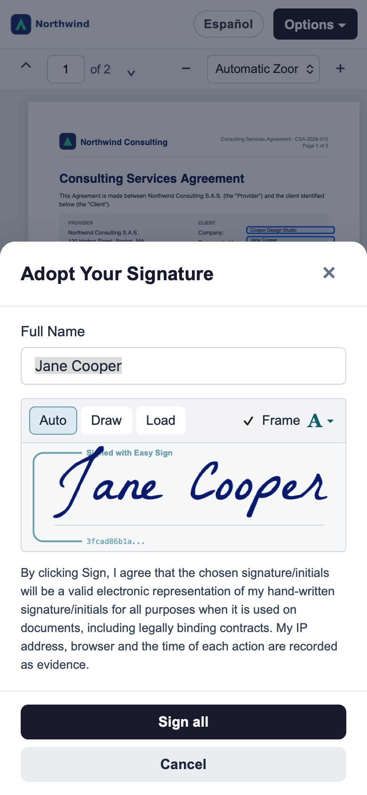
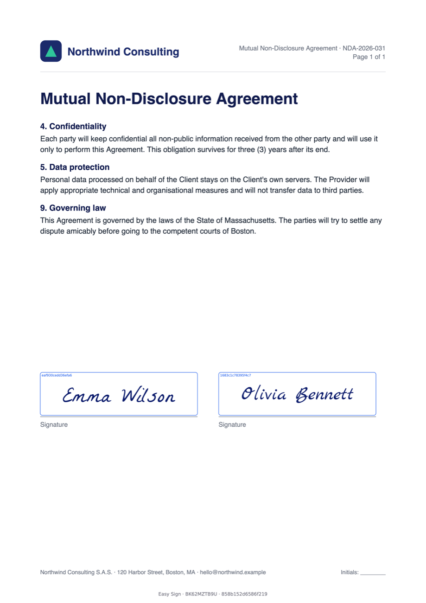
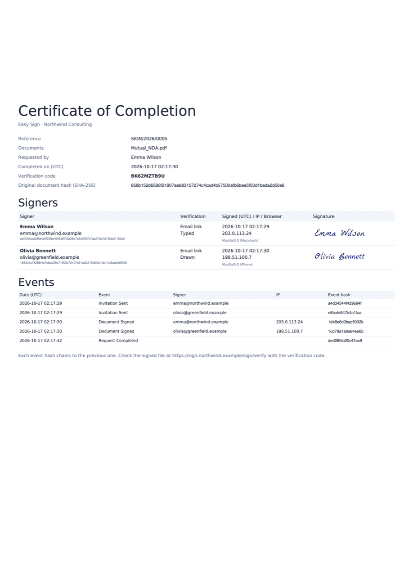
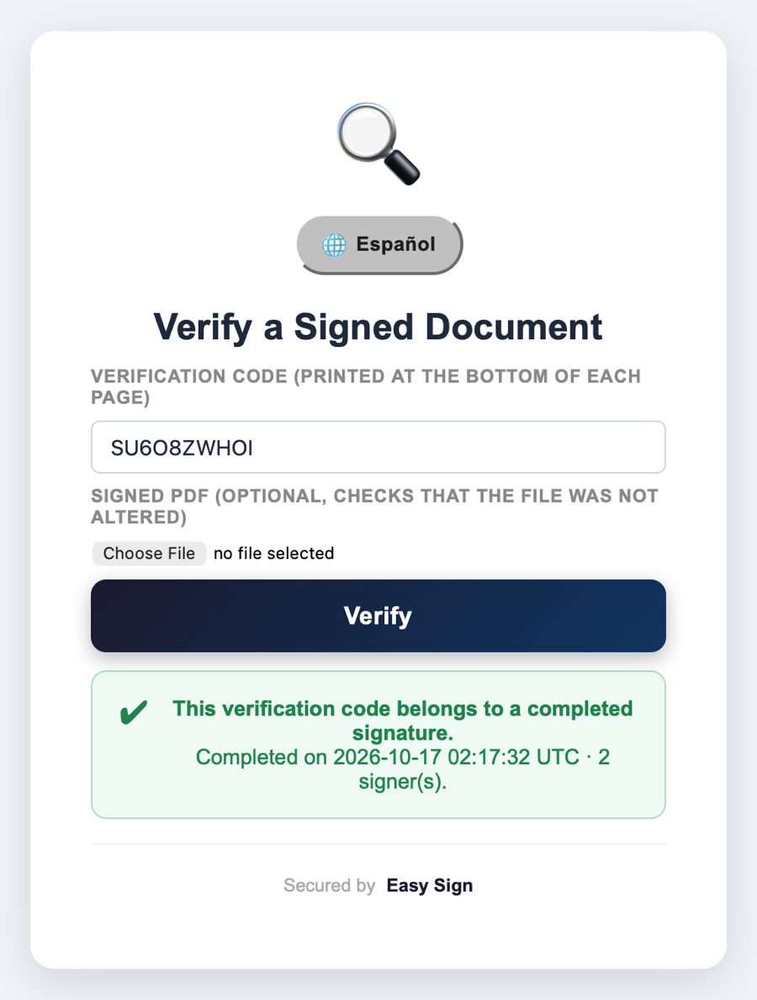

Upload a PDF, drag the fields and send it. Your clients sign from any phone or computer, and you get the signed PDF with a certificate of completion — without your documents ever leaving your server.
The problem
Most teams still print, sign, scan and email back, or pay a monthly fee per user to an external service that keeps their contracts on someone else's servers.
Per-user or per-envelope pricing turns every new hire and every contract into a cost.
Contracts, IDs and salaries travel to a third-party cloud. Hard to explain to clients and auditors.
Printing, scanning and chasing signatures by email adds days to every deal.
How it works
No training needed: if you can use Odoo, you can send a document for signature.
Click Upload PDF in Easy Sign, or start from a saved template.
Signature, initials, name, date, checkbox… one colour per signer.
Each signer gets an email with a private link. No account or app needed.
The signed PDF and its certificate are attached to the request.
How it looks
A clean, full-screen experience on desktop and mobile, in English or Spanish.
Sign
The document fills the screen and every field is highlighted. Your signer always knows what is left.
Adopt
Type, draw or upload a signature. Easy Sign remembers it and applies it to every remaining field.


Mobile
The layout adapts to any screen. On phones the signature dialog opens as a bottom sheet.
Send
Every signer receives a branded email with a private link, your message and the expiry date.
Track
Follow each document from draft to fully signed, like any other Odoo record.
Result
When the last signer finishes, Easy Sign builds the final PDF and appends a certificate of completion.


Security & legal evidence
Easy Sign records who signed, when, from where and on exactly which version of the document.
The original and the signed PDF are hashed, so any change is detected.
Each event is chained to the previous one and cannot be edited.
Confirm the signer's identity with a one-time code before signing.
Unique tokens: nobody sees another signer's data.
Optionally seal the final PDF with your company's digital certificate.
Anyone can check a signed PDF on your own /sign/verify page.
Enter the code printed at the bottom of each page, or upload the PDF to confirm it was not altered after signing.

Configuration
Settings, Fields and Tags menus with the forms and lists you already know.
Configure
Turn features on with a checkbox and create your own field types linked to contact data.
Why Easy Sign
| Easy Sign | Paper | External service | |
|---|---|---|---|
| Documents stay on your server | ✓ | ✓ | ✗ |
| No per-user or per-envelope fees | ✓ | ✓ | ✗ |
| Sign from a phone in seconds | ✓ | ✗ | ✓ |
| Audit trail and hash verification | ✓ | ✗ | ✓ |
| Linked to Odoo records and contacts | ✓ | ✗ | Partial |
| No external API or account needed | ✓ | ✓ | ✗ |
Optional add-ons
easy_sign_smsSend the one-time code by SMS through Odoo's SMS gateway.
easy_sign_certificateSeal the final PDF with your company's digital certificate (.pfx / .p12).
Odoo
20.0 Community / Enterprise
Depends on
mail, web
License
LGPL-3
Languages
English, Español
Made by Angels SAS, based on the original module by Ahmed Kamal. Questions or custom work? Contact us from this page.